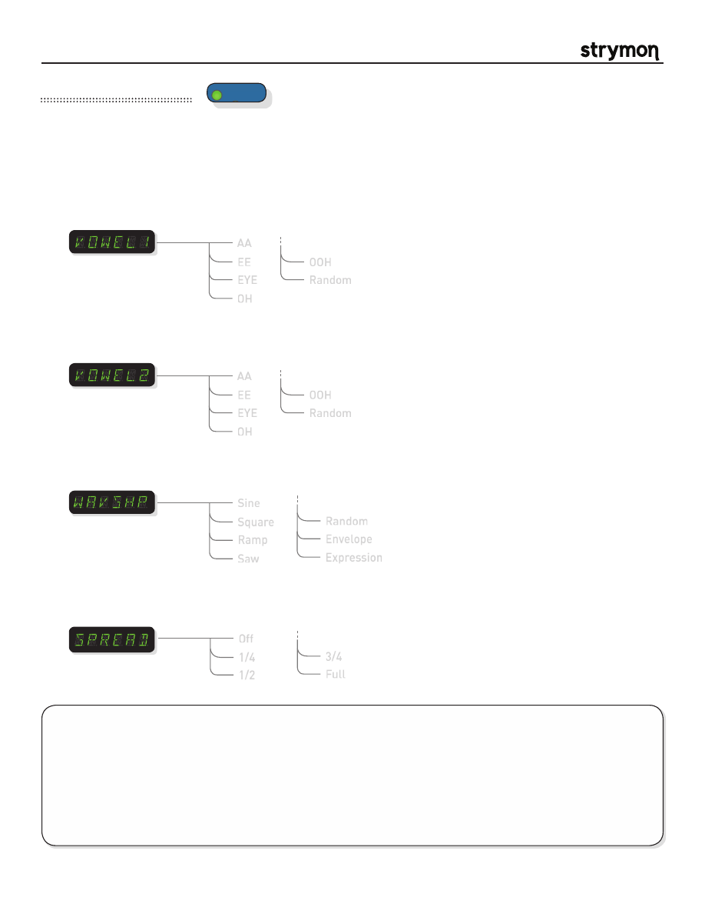

Mobius
-
User Manual
®
pg 14
TYPE
push (bank/BPM)
hold (save)
push (param)
hold (global)
VALUE
PARAM 1
PARAM 2
B
TAP
A
SPEED
DEPTH
LEVEL
BANK DOWN
BANK UP
FILTER
DESTROYER
VIBE
ROTARY
FLANGER
PHASER
CHORUS
FORMANT
AUTOSWELL
VINTAGE TREM
PATTERN TREM
QUADRATURE
®
Mod Machines: Formant
A special filter type that emulates the human vocal tract. The formant machine also features selectable LFO wafeforms.
PARAMETERS:
AA
EE
EYE
OH
OOH
Random
Vowel 1
:
Sets the first vowel of the formant filter. Setting Vowel 1 to random will choose a
new vowel sound every time the LFO triggers the vowel.
TIPS & TRICKS:
Many cool vocal effects happen in the transition between vowels. With that in mind, experiment with
the DEPTH knob to dial in the desired vocal effects.
The DEPTH knob is similarly important when using the ENV WAVSHP, as it sets the dynamic vocal response to your
playing. The SPEED knob controls how quickly the formants follow the envelope.
Connect an expression pedal and select EXPR under the WAVSHP param, and Mobius will blend between the two
vowels based on the position of the pedal giving you a vocal Wah experience.
AA
EE
EYE
OH
OOH
Random
Vowel 2
:
Sets the second vowel of the formant filter. Setting Vowel 2 to random will choose
a new vowel sound every time the LFO triggers the vowel.
Sine
Square
Ramp
Saw
Waveshape
:
Selects the current LFO (low frequency oscillator) waveform to apply to the formant
filter.
Random
Envelope
Expression
Spread:
Determines the phase offset between the Left and Right LFO signals. Listen to the
effect it has on the stereo image as you adjust the parameter.
note:
Only applies
when using the unit in a stereo configuration.
Off
1/4
1/2
3/4
Full